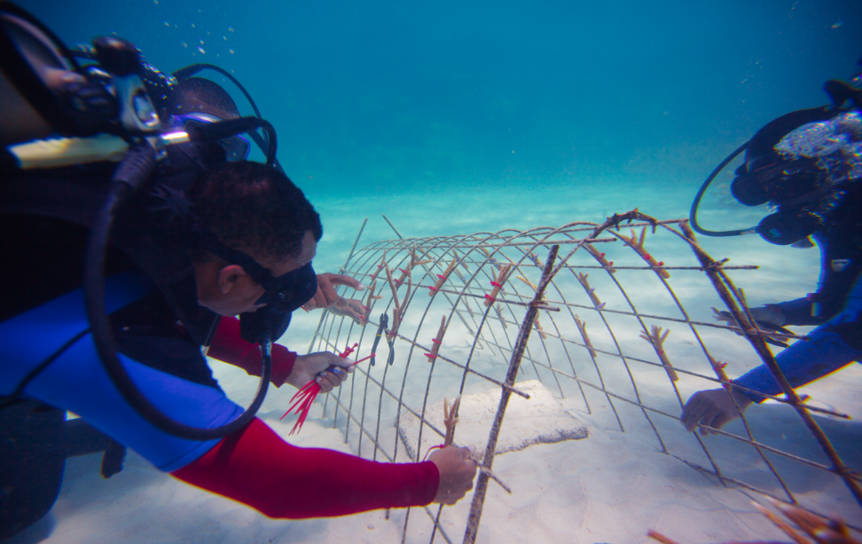

Living for the sea: Restoring coral reefs on the Dominican coast
By Sheilly Núñez. This project will also be featured in the forthcoming IDB Sustainability Report
The turquoise waters and white sand beaches of the Caribbean attract tourists the world over. And for good reason. The region is without a doubt one of the most beautiful places in the world. Beneath the surface of all that natural beauty, however, is a rich and hugely varied ecosystem that a new generation is working to keep vibrant and intact.
For the Dominican Republic, the sea is one of its main attractions. It has a rich biodiversity, including coral reefs that line 11 percent of the country's marine coast. The reefs also represent an important source of income for coastal communities. Fausto Guerrero, a 29-year-old resident of Punta Cana who used to rely solely on fishing for his livelihood, is now working to preserve the coral reefs that are so crucial to sustaining marine life and biodiversity in Dominican waters.
For the last seven months, Fausto has been participating in the "Coral Gardening to Enhance Tourism and Support Coral Reef Conservation" project. In partnership with the Punta Cana Ecological Foundation (PCEF), the project aims to link tourists and local communities in efforts to preserve and develop coral gardens. Participants take part in activities that are centered on conservation, education, and recreation, and are designed to promote environmental care.
With this project Fausto has gained knowledge and skills on how to restore, maintain, and reproduce corals, and put them to work helping coral ecosystems.”The sea is full of novelties. It’s so interesting. I live for the sea,” he says.
He and other volunteers collect material from endangered coral colonies and propagate them in nurseries made of metal frames and ropes. The corals grow around these frames and ropes, and are then pruned and prepared to be replanted on the reef. As a result, Punta Cana now has the second-largest coral nursery in the Caribbean.
Fausto and many of his fellow fishermen —also trained as coral gardeners in the Punta Cana area —are looking to share their knowledge with visitors. Coral gardening is shaping up to be both lucrative and sustainable over the long term, providing jobs for people like Fausto and their families. At the same time, it offers a new opportunity to show tourists a very different side of the Dominican Republic from the traditional sun and beach package. With a little guidance, tourists can take part in coral gardening just as easily as a professional like Fausto.
This brand of ecotourism has three main goals:
1) Preserving the environment;
2) Preventing the degradation of the marine fauna and the extinction of coral species currently threatened by climate change; and,
3) Controlling overfishing and other human activities, such as indiscriminate extraction of species and diving practiced in an irresponsible way.

Encouragingly, local guides and small businesses are beginning to make coral gardening and similar activities available as tourist products. So the next time you pack your bags for a Caribbean getaway, try to take the time to visit a coral nursery or even take part in the activities. Just like Fausto, we can all ¨live for the sea¨ and truly make a difference.
Sheilly Núñez is a Dominican lawyer, project manager and published writer. She works as consultant at the Multilateral Investment Fund in the Dominican Republic where she supports operations in supervision. She has a personal website specialized in writing and literature: www.sheillynunez.com
Photos: Punta Cana Ecological Foundation